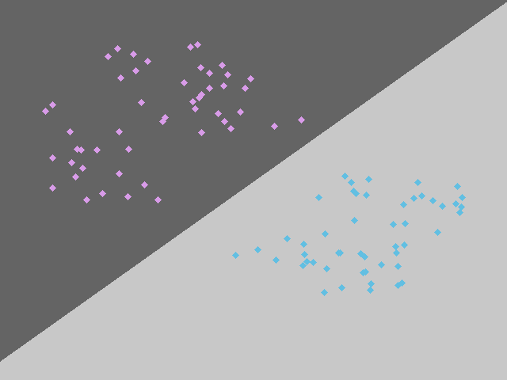
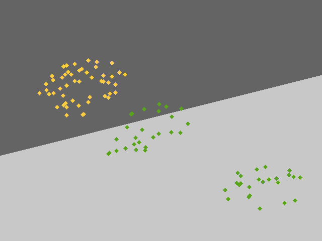
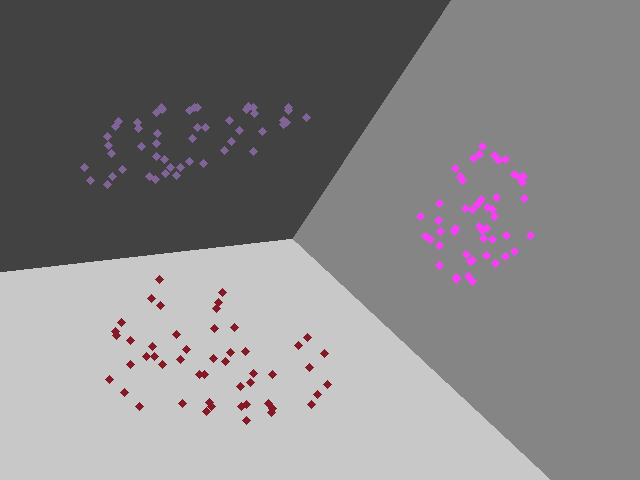
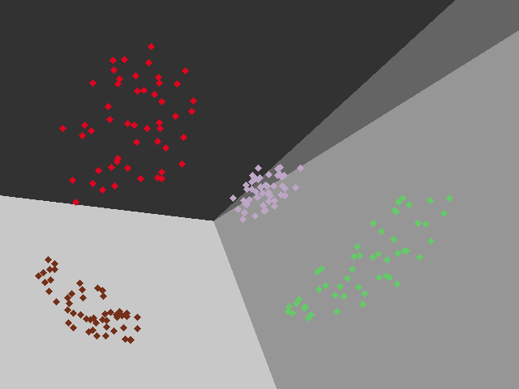

Least Squares in Classification
Keywords: least squares
Least Squares for Classification[^1]
Least-squares for linear regression had been talked in ‘Simple Linear Regression’. And in this post, we want to find out whether this powerful algorithm can be used in classification.
Recalling the distinction between the properties of classification and regression, two points need to be emphasized again(‘From Linear Regression to Linear Classification’):
- the targets of regression are continuous but the targets of classification are discrete.
- the output of classification hypothesis could be $\mathbb{P}(\mathcal{C}_k|\boldsymbol{x})$ generatively or the output is just a class label $\mathcal{C}_k$ discriminatively.
The generative model would be talked in other posts. And we focus on discriminative models in these posts which means our hypothesis directly gives which class the input belongs to.
We want to use least-squares methods that had been designed and proved for linear regression. And what we could do to extend the least-squares method in classification is to:
- modify the type of output
- design a discriminative model
Modifying the type of output is to convert the class label into a number, and assuming the number is also continuous is necessary. And when we use 1-of-K label scheme, we could build the model with $K$ linear functions:
$$
\begin{aligned}
y_1(\boldsymbol{x})&=\boldsymbol{w}^T_1\boldsymbol{x}\
y_2(\boldsymbol{x})&=\boldsymbol{w}^T_2\boldsymbol{x}\
\vdots&\
y_K(\boldsymbol{x})&=\boldsymbol{w}^T_K\boldsymbol{x}\
\end{aligned}\tag{1}
$$
where $\boldsymbol{x}=\begin{bmatrix}1\x_1\x_2\\vdots\x_n\end{bmatrix}$ and $\boldsymbol{w}_i=\begin{bmatrix}w_0\w_1\w_2\\vdots\w_n\end{bmatrix}$ for $i=1,2,\cdots,K$. And $y_i$ is the $i$th component of 1-of-K output for $i=1,2,\cdots,K$. Clearly, the output of each $y_i(\boldsymbol{x})$ could not be just 0 or 1. And we set the largest value to be 1 and others 0.
We had discussed the linear regression with the least-squares in a ‘single-target’ regression problem. And that idea can also be employed in the multiple targets regression. And these $K$ weight vectors $\boldsymbol{w}_i$ can be calculated simultaneously. We can rewrite the equation (1) into the matrix form:
$$
\boldsymbol{y}(\boldsymbol{x})=W^T\boldsymbol{x}\tag{2}
$$
where the $i$th column of $W$ is $\boldsymbol{w}_i$
Then we employ least square method for a smaple:
$$
{(\boldsymbol{x}_1,\boldsymbol{t}_1),(\boldsymbol{x}_2,\boldsymbol{t}_2),\cdots,(\boldsymbol{x}_m,\boldsymbol{t}_m)} \tag{3}
$$
where $\boldsymbol{t}$ is a $K$-dimensional target consisting of $k-1$ 0’s and one ‘1’. And each diminsion of output $\boldsymbol{y}(\boldsymbol{x})_i$ is the regression result of the corresponding dimension of target $t_i$. And we build up the input matrix $X$ of all $m$ input consisting of $\boldsymbol{x}^T$ as rows:
$$
X=\begin{bmatrix}
-&\boldsymbol{x}^T_1&-\
-&\boldsymbol{x}^T_2&-\
&\vdots&\
-&\boldsymbol{x}^T_K&-
\end{bmatrix}\tag{4}
$$
The sum of square error is:
$$
E(W)=\frac{1}{2}\mathrm{Tr}{(XW-T)^T(XW-T)} \tag{5}
$$
where the matrix $T$ is the target matrix whose $i$th row in target vevtor $\boldsymbol{t}^T_i$. The trace operation is employed because the only the value $(W\boldsymbol{x}^T_i-\boldsymbol{t}_i)^T(W\boldsymbol{x}_i^T-\boldsymbol{t}_i)$ for $i=1,2,\cdots,m$ is meaningful, but $(W\boldsymbol{x}^T_i-\boldsymbol{t}_i)^T(W\boldsymbol{x}_j^T-\boldsymbol{t}_j)$ where $i\neq j$ and $i,j = 1,2,\cdots,m$ is useless.
To minimize the linear equation in equation(5), we can get its derivative
$$
\begin{aligned}
\frac{dE(W)}{dW}&=\frac{d}{dW}(\frac{1}{2}\mathrm{Tr}{(XW-T)^T(XW-T)})\
&=\frac{1}{2}\frac{d}{dW}(\mathrm{Tr}{W^TX^TXW-T^TXW-W^TX^TT+T^TT})\
&=\frac{1}{2}\frac{d}{dW}(\mathrm{Tr}{W^TX^TXW}-\mathrm{Tr}{T^TXW}\
&-\mathrm{Tr}{W^TX^TT}+\mathrm{Tr}{T^TT})\
&=\frac{1}{2}\frac{d}{dW}(\mathrm{Tr}{W^TX^TXW}-2\mathrm{Tr}{T^TXW}+\mathrm{Tr}{T^TT})\
&=\frac{1}{2}(X^TXW-X^TT)
\end{aligned}\tag{6}
$$
and set it eqaul to $\boldsymbol{0}$:
$$
\begin{aligned}
\frac{1}{2}(X^TXW-X^TT )&= \boldsymbol{0}\
W&=(X^TX)^{-1}X^TT
\end{aligned}\tag{7}
$$
where we assume $X^TX$ can be inverted.
The component $(X^TX)^{-1}X^T$ is also called pseudo-inverse of the matrix $X$ and it is always denoted as $X^{\dagger}$.
Code and Result
The code of this algorithm is relatively simple because we have programmed the linear regression before which has the same form of equation (7).
What we should care about is the formation of these matrices $W$, $X$ and $T$.
we should first convert the target value into 1-of-K form:
1 | def label_convert(y, method ='1-of-K'): |
what we do is to count the total number of labels($K$)and we set the $i$th component of the 1-of-K target to 1 and other components to 0.
The kernel of the algorithm is:
1 | class LinearClassifier(): |
the line x = np.c_[np.ones(x_dim), x] is to augment the input vector $\boldsymbol{x}$ with a dummy value $1$. And the transpose of the result is to make each row represent a weight vector of eqation (2). The entire project can be found The entire project can be found https://github.com/Tony-Tan/ML and please star me.
I have test the algorithm in several training set, and the result is like the following figures:




Problems of Least Squares
- Lack of robustness if outliers (Figure 2 illustrates this problem)
- Sum of squares error penalizes the predictions that are too correct(if an input belongs to label ‘1’ but its output is ‘100’)
- Least squares workes for regression when we assume the target data has a Gaussian distribution and then the least-squares method maximizes the likelihood function. The distribution of targets in these classification tasks is not Gaussian.
References
[^1]: Bishop, Christopher M. Pattern recognition and machine learning. springer, 2006.